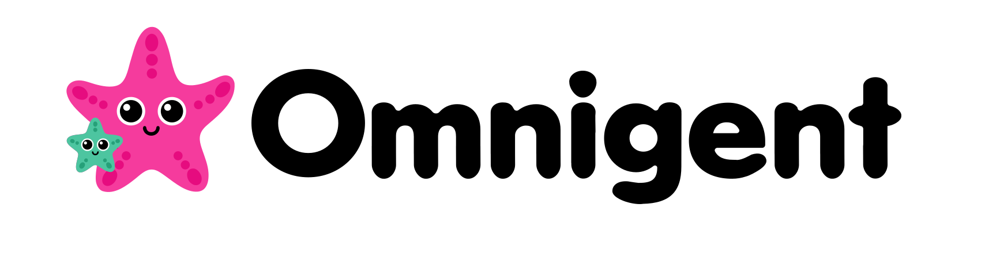

Run an Omnigents server on this machine, or connect to an existing one.
Recent servers
Omnigent CLI
Install the Omnigent CLI ↗
Already installed it? Re-detect, or set the path below.
Path to the Omnigent CLI